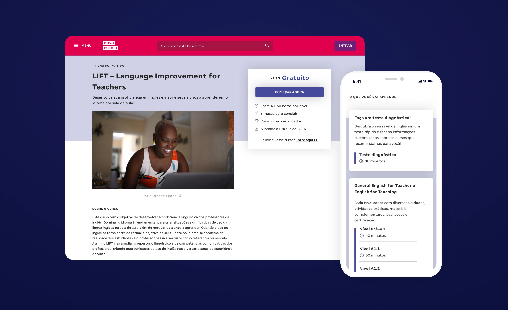
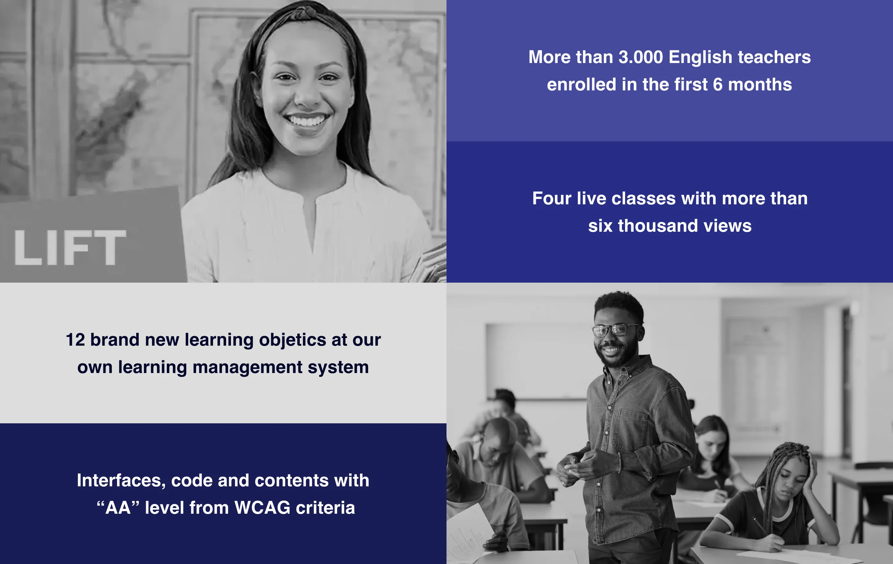
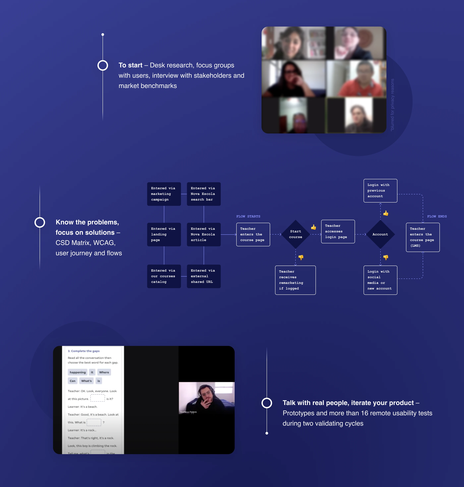
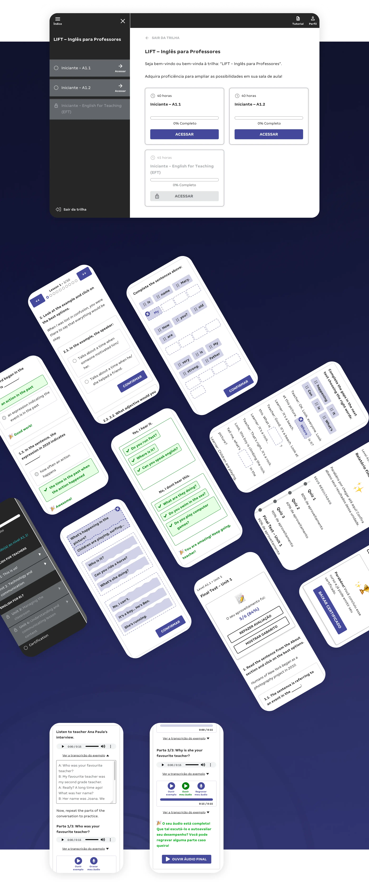

English for Teachers
Built as part of the British Government's Skills for Prosperity initiative, this project redesigned Nova Escola's virtual learning environment for English teachers in Brazil's public school system — from WCAG AA accessibility mapping and focus groups to wireframing, prototyping, and remote usability testing across the country.

Scenario and roles
Teaching English in the Brazilian public school system faces many challenges — from the need for instructional materials adapted to the students' reality to improving the training and support for educators. With the goal of boosting careers and creating new opportunities all over the country, the British Government came on the scene to support Brazilians' English education, with the "Skills For Prosperity" project.
As the Product Designer responsible for implementing part of the project, I was in charge of building solutions for a self-instructional and online course focused on public school English teachers, ensuring not only the practices of writing, listening, speaking and reading, but also a space where the focus is on the reality of Brazilians' classrooms and on solving the main needs of English educators. One of the greatest challenges this project had was turning the Nova Escola Virtual Environment into a space that is suitable for language teaching.

Deliverables
We started the project's discovery stage with a desk research about the reality of English teaching in Brazil and focus groups with teachers (conducted with Kyra Consultoria), as well as an analysis of the market of national and international online language courses (benchmarks) and an alignment with internal stakeholders and the pedagogical base of the project. As the project expected a minimum WCAG "AA" level, we mapped out all the necessary requirements right at the beginning.
Ideation dynamics were done to identify the needs of teachers, partners and internal staff, which led to the creation of a CSD matrix (Certainties, Suppositions, and Doubts) for definitions of the main steps to be taken. With that done, the MVP proposal wireframe structure was built and validated, followed by medium and high fidelity prototyping and usability testing with users from all over Brazil, remotely guided.

From this Design Thinking stage, which lasted an average of one month, the delivery resulted in a totally redesigned, responsive virtual learning environment, designed for accessibility and inclusion. More than 12 new learning objects were created for the platform, considering the best formats for language teaching in digital environments.

Results and learnings
In addition to the national reach that the course achieved in its first six months of life, we could observe through event funnels and heatmaps that the new Product Detail Page layout led to a significant growth in conversion rates of both free and paid courses.
Unlike a digital product, the implementation of a project often has more restricted deadlines and demands more delimited by the partner. Learning to deal with this balance was crucial to bring product knowledge to the project — especially regarding the practice of quick tests and user research for proposal validation.
We also had multiple technical challenges, as virtually every designed task called for simplicity and the easiest possible path to implementation. With a large number of tasks, the process of coming up with a doable MVP was crucial, which brought us great learning about prioritization and technical feasibility.
Finally, working with the WCAG requirement brought great knowledge on digital accessibility to our platform, ensuring intense learning for everyone involved in the project.
Team: Matheus Petroni (Product Designer), Karine Presotti (Product Manager), Cainã Perri (Content Coordinator), Vanessa Camargo (Content Assistant), Juliana Reis, João Victor Bispo, Cláudia Rejane, Naelson Silva and Daniel Barreto (Developers), partnership with Andre Willik, Luan Castro and Rodrigo Pereira (Developers) from Lambda3 Consultoria.